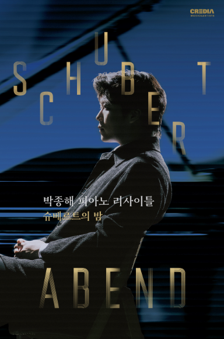
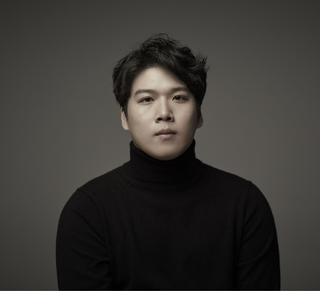
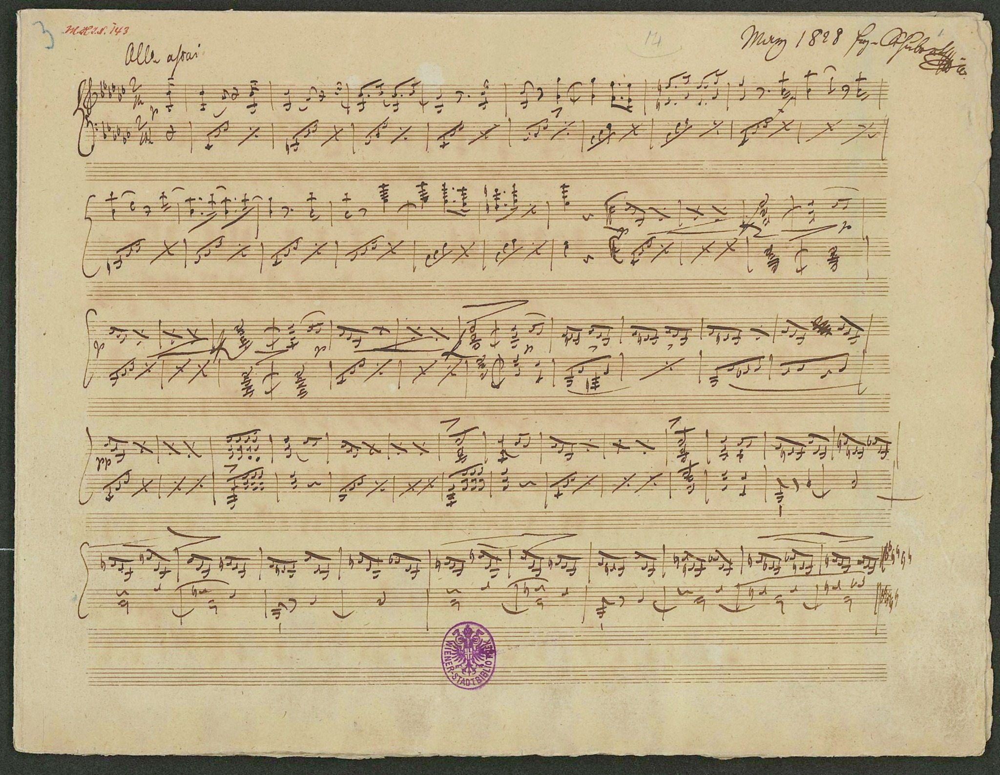
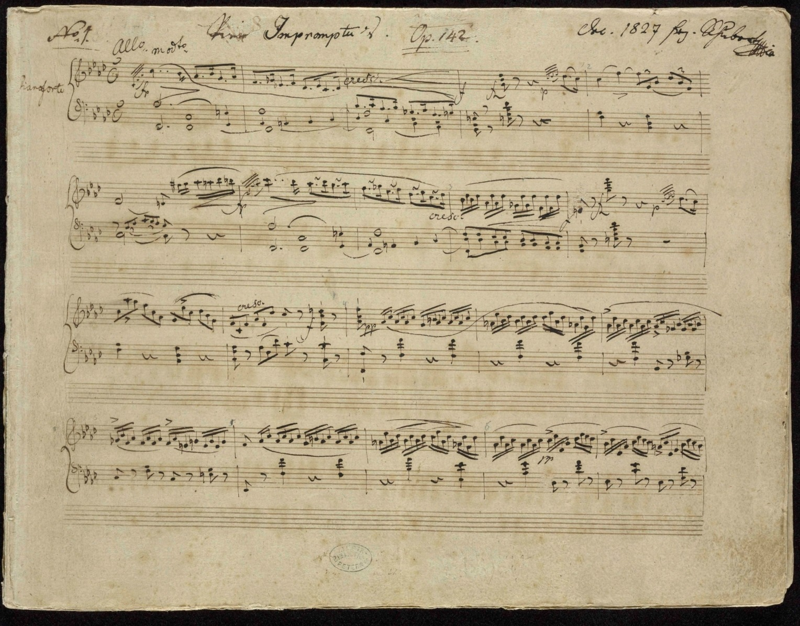
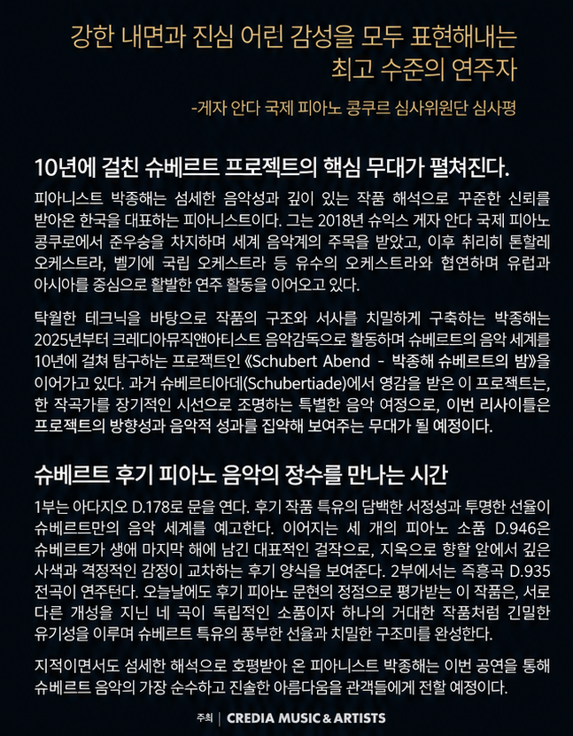

PIANOMODA · CONCERT PRELUDE
Concert
Prelude
Curated by PianoMoDa · with EJ Seo
Jonghai Park · Schubert Abend
2026. 10. 16 (Fri) · 7:30 PM예술의전당 IBK기업은행챔버홀
ABOUT THIS RECITAL
Schubert Abend
박종해가 약 10년에 걸쳐 이어온 Schubert Project의 핵심 리사이틀
D.178의 투명한 서정 · D.946의 사색과 격정 · D.935의 선율과 구조
D.178의 투명한 서정 · D.946의 사색과 격정 · D.935의 선율과 구조
D.178Transparent lyricism · Adagio
D.946Reflection & turbulence · 3 Piano Pieces
D.935Melody & structure · 4 Impromptus

PIANIST
박종해 · JongHai Park
2018 Géza Anda International Piano Competition · 2nd PrizeHong Kong International Piano Competition · 2nd PrizeDublin International Piano Competition · 2nd Prize · Concerto Prize · Mozart PrizeQueen Elisabeth Competition · Prizewinner · Youngest Performer Special PrizeArturo Benedetti Michelangeli PrizeCREDIA Music & Artists · Piano Artist
ARTIST PROFILE ↗I · EARLY SCHUBERT
Adagio in G major, D.178
FORM / STRUCTURE · 단악장 아다지오 · 코랄풍 도입 → 화성적 전개 → 첫 소재의 변형된 귀환
LISTEN FOR · Chordal voicing · Inner-voice suspensions · Chromatic harmonic turns · Arpeggiated return of the opening material
ABOUT
코랄을 닮은 화음 위로 이어지는 윗성부의 선율. 중간부의 화성 변화로 높아지는 긴장. 처음의 선율이 돌아온 뒤 아르페지오로 넓어지는 음향.
CONTEXT
1815년 슈베르트가 작곡. 완성된 첫 판본과 단편으로 남은 둘째 판본이 존재. 이 사이트의 참고 연주와 악보는 첫 판본이며, 10월 16일 공연의 연주 판본은 미확인.
REFERENCE PERFORMANCE · Alberto Miodini · D.178 First Version
II · THREE PIANO PIECES
Drei Klavierstücke, D.946
FORM / STRUCTURE · Ternary / rondo-based designs · Recurrent returns separated by sharply contrasting episodes
LISTEN FOR · Sudden tonal distance · Persistent rhythmic cells · Long-span returns · Contrast between improvisatory surface and tightly controlled architecture
ABOUT
세 곡 모두 처음의 선율이 돌아오는 사이에 성격이 다른 부분을 배치한 구성. 제1곡의 격렬한 진행, 제2곡의 노래하는 선율, 제3곡의 당김음과 춤 리듬이 감상 포인트.
CONTEXT
슈베르트가 세상을 떠난 해인 1828년 5월 작곡, 생전 미출판. 브람스가 편집한 초판은 1868년에 출판. 제1곡은 슈베르트가 삭제한 부분을 브람스가 초판에 다시 수록해, 판본에 따라 구성과 길이에 차이. 앞선 즉흥곡집보다 늦게 알려진 사후 출판 작품.
I · ALLEGRO ASSAI · E-FLAT MINORRevised ternary design · storm-driven outer sections · striking B-major Andante at the center · original rondo-like conception compressed by Schubert’s later cut
II · ALLEGRETTO · E-FLAT MAJORABACA rondo · calm recurring refrain · dark C-minor episode · more remote A-flat-minor episode with its own internal expansion
III · ALLEGRO · C MAJORScherzo-like ternary design · syncopated, dance-driven outer sections · broader D-flat-major middle section · compressed return and direct close
RECOMMENDED PERFORMANCE · András Schiff · Drei Klavierstücke D.946
HISTORICAL MANUSCRIPT · SCORE PREVIEW

Historical manuscript thumbnailClick / tap to preview the complete printed score.
III · FOUR IMPROMPTUS
4 Impromptus, Op. posth. 142, D.935
FORM / STRUCTURE · Sonata-related opening · Minuet & Trio · Theme + 5 Variations · Extended ternary / rondo-like finale
LISTEN FOR · Recurring motivic links · Major/minor reframing · Songful inner voices · Rosamunde-theme transformation · Hemiola and dance impulse
ABOUT
제1곡은 성격이 다른 부분들의 대비, 제2곡은 미뉴에트와 트리오 형식. 제3곡은 《로자문데》에도 쓰인 선율과 다섯 개의 변주, 제4곡은 춤 리듬으로 마무리되는 구성.
CONTEXT
1827년 슈베르트가 작곡한 두 번째 네 곡의 즉흥곡집. 생전 출판을 추진했으나 성사되지 않은 작품. 1839년 사후 작품번호 142로 출판.
I · ALLEGRO MODERATO · F MINORSonata-related design · imposing opening gesture · lyrical A-flat major contrast · return without a conventional development section
II · ALLEGRETTO · A-FLAT MAJORMinuet–Trio–Minuet · restrained outer dance · flowing triplet motion and darker harmonic shading in the Trio
III · ANDANTE · B-FLAT MAJORTheme + five variations · theme shared with Schubert’s Rosamunde world · progressively transformed texture rather than simple ornamentation
IV · ALLEGRO SCHERZANDO · F MINORExtended ternary / rondo-like design · persistent hemiola · Hungarian-flavored rhythmic profile · increasingly virtuosic close
RECOMMENDED PERFORMANCE · András Schiff · Four Impromptus D.935
HISTORICAL MANUSCRIPT · SCORE PREVIEW

Historical manuscript thumbnailClick / tap to preview the complete printed score.
ORIGINAL PROGRAM · NOTES

AFTER THE CONCERT
Encore & Postlude
♪
TO BE ADDED AFTER 16 OCT 2026Encore · performance notes · PianoMoDa Postlude